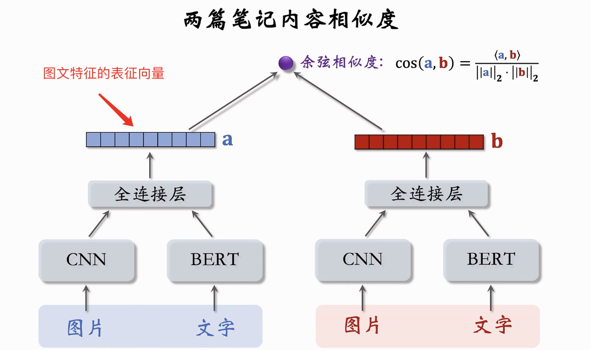

UGC平台中用户可以自由发表内容, 如何对最新的内容做推荐就涉及到冷启动问题, UGC比PGC更难做冷启动, 因为内容量大且差异大.
出发的角度主要分为三部分: 用户侧(推荐), 作者侧(激励), 高热内容(发掘).
为什么需要做冷启动
三方面原因:
- 正常物品可以依赖用户点击信息作推荐, 而新发表内容缺少用户交互信息, 所以需要做特殊处理.
- 对新发表内容做扶持可以增强作者发布意愿.
- 为了发掘有潜力的内容
所以冷启动的目标就是:
- 精准推荐: 克服冷启动的困难, 把新内容推荐给用户的同时尽量保证不引起用户的反感.
- 激励发布: 向低曝光的新物品倾斜流量, 从而激励作者的发布意愿.
- 挖掘高潜: 小流量试探, 找到高质量的内容推荐给用户, 给予一部分流量倾斜.
评价指标
作者侧指标
主要包括发布渗透率, 人均发布量
发布渗透率 = 当日发布人数 / 日活人数. (发布一篇以上都算一个发布人数.)
人均发布量 = 当日发布笔记数 / 日活人数
这些指标反映了作者发布积极性, 冷启的目标是促进发布从而扩大内容池.
新发布内容曝光越多, 交互越多, 作者积极性就更高.
用户侧指标:
包括两个方面:
- 新笔记指标: 点击率, 交互率
- 大盘指标: 消费时长, 日活, 月活
对于新笔记而言, 还是存在头部效应, 少量热门笔记会占据大多数曝光, 因此做推荐的时候最好进行分类考虑, 比如将高曝光笔记和低曝光笔记分开看, 高曝光笔记交互充足, 不需要冷启动也能推荐得好; 而低曝光笔记交互信息少, 推荐不够准, 因此需要特殊处理.
而对于大盘指标, 我们要做的就是做好作者侧激励的同时保证大盘指标的稳定.(过于扶持新用户会导致大盘指标降低, 而只关注大盘指标又很难扶持新用户).
内容侧指标:
主要是高热笔记占比. 高热笔记占比越高, 说明冷启动挖掘优质笔记的能力越强, 即内容侧推荐做得越好.
冷启动涉及的优化点
- 优化全链路(召回, 排序)
- 流量调控(流量如何在新老物品之间分配)
召回通道冷启动
冷启动召回和传统召回有相同点也有不同点.
相同点:
- 自带图片, 文字, 地点等.
- 有算法或者人工标注的标签.
不同:
- 没有点击信息.
- 缺少embedding信息(embedding一般是从用户和物品交互的过程中学习的, 而这里并没有学习到embedding信息).
itemCF(不再适用)
因此, 从这里可以看出, 由于缺少点击信息, itemCF不能够使用(itemCF:用户对物品j的喜欢程度可以通过用户对i的喜爱程度和物品ij之间的相似度来表示, 其中相似度由共同喜欢两个物品的用户数参与计算, 而新物品并没有交互信息, 因此itemCF不适用).
不过个人感觉似乎强行要用也不是不行, 相似度可以使用多模态模型获取图片文字信息, 然后不同笔记做内容相似度计算, 再通过用户喜欢过的笔记来寻找相似的新发布笔记做推荐. 可能工业界有自己的考量所以并不这么做. 即聚类召回.
双塔模型(需要改进)
与此同时, 双塔模型我们又需要物品的embedding信息才能使用, 而这里我们看到其实是缺少embedding信息的, 所以我们需要对双塔模型进行修改, 具体的有两种方式.
- 新笔记使用default embedding.
物品塔做推荐的时候让所有新笔记共享一个default embedding并用default embedding进行训练, 下一次训练再用训练好的embedding.
- 使用相似物品的embedding.
多模态模型获取图文内容表征为一个向量, 查找topk内容最相似的高曝光笔记(高曝光笔记的embedding学的更好, 所以优先使用), 然后得到的k个向量取平均即为新笔记的embedding.
多召回池
对于新物品我们可以设置多个召回池, 从而让笔记有更多曝光机会.
比如我们分:
- 1小时新笔记
- 6小时新笔记
- 24小时新笔记
- 30天老笔记
召回池可以独立区分不同时长的笔记, 即1小时新笔记中我们必定会曝光其中一部分, 而不是说1小时新笔记和30天笔记混一起然后可能1小时新笔记一篇都没曝光.
然后就是多召回池使用的是同一个双塔模型, 所以并不增加训练代价.
类目召回以及关键词召回
各个做推荐的公司都会记录用户的画像, 画像记录了用户感兴趣的类目和关键词.
做类目召回: 即系统维护一份类目到笔记的索引, 然后按照发布时间倒排(鼓励新笔记), 最后按照相应的索引召回笔记.
关键词召回和类目召回完全相似.
缺点:
- 只对新发布的笔记有效: 因为只取回类目/关键词下面的最新的笔记, 一旦过了几个小时就再也没有机会召回.
- 若个性化, 不够精准.
缺点虽然明显, 但是还是很重要, 尤其对于促进作者发布的积极性.
聚类召回
思路: 如果用户喜欢一篇笔记, 那么用户还可能喜欢与这篇笔记内容相似的笔记.
做法:
事先训练一个神经网络, 基于笔记的图文内容将笔记映射到向量, 然后对笔记向量做聚类, 比如我们分出1000个cluster(K-Mean, 相似度可以用余弦相似度), 然后记录下每个cluster的中心.
从1000个中心向量里面找出最相似的向量作为新笔记的cluster.
把新笔记添加到cluster上, cluster到笔记列表是建立了索引的(按时间倒排).
召回: 给定用户id, 找到用户的lastN交互, 然后将这些作为种子, 找到用户对哪些cluster感兴趣, 然后再从cluster中取回最新的m篇笔记. 最多共有m*n篇被召回.
图文转向量的模型:

非常直观的CNN + Bert + FC层. 其中CNN和Bert都可以是预训练模型加上Finetuning, fc随机化权重然后进行学习.
学习过程中网络输出正样本笔记b+, 种子笔记a和负样本笔记b-, 然后我们鼓励 cosine(a, b+) > cosine(a, b-). 比如我们可以用triplet hinge loss, 或者triplet logistic loss.
正负样本选择:
正样本:
- 使用人工标注的二元组的相似度.(代价大)
- 算法自动选择正样本.
筛选条件:
- 只用高曝光笔记作为二元组(充足的用户交互信息, 算法选的会比较准).
- 相同二级类目进行筛选, 从而避免完全不相关类目.
- 最后用itemCF来进行筛选.
负样本:
全体笔记里面选, 只要字数相对多, 笔记质量高, 避免图文无关即可.
Look-Alike召回
Look-Alike起源于互联网广告, 即物品i的目标用户构成集合U, 那么所有和集合U内部用户相似的用户也可以被推荐.(个人理解类似userCF).
如果用户u对新发布的笔记有点击点赞收藏转发的行为, 则表示用户u对新笔记感兴趣, 那么我们就可以把用户u记为种子用户, 从而我们可以将新笔记推荐给所有与用户u相似的用户.
具体我们可以将种子用户的特征向量(可以复用双塔模型的用户向量)取均值得到一个向量, 将其作为新笔记的特征向量. (本质为使用相似用户的向量作为物品的特征, 方便后续做最近邻查找来召回)
这个向量需要做近线更新, 即不需要实时更新, 但是还是需要做分钟级更新. 每当有新的交互用户, 就需要将新用户的向量加入平均来更新向量.
然后实际场合我们需要将新笔记向量加入向量数据库, 然后每当用户刷新一下软件, 我们就对用户向量(复用双塔)做最近邻查找, 然后最近邻查找的返回就是Look-Alike的召回结果.
流量调控
TODO